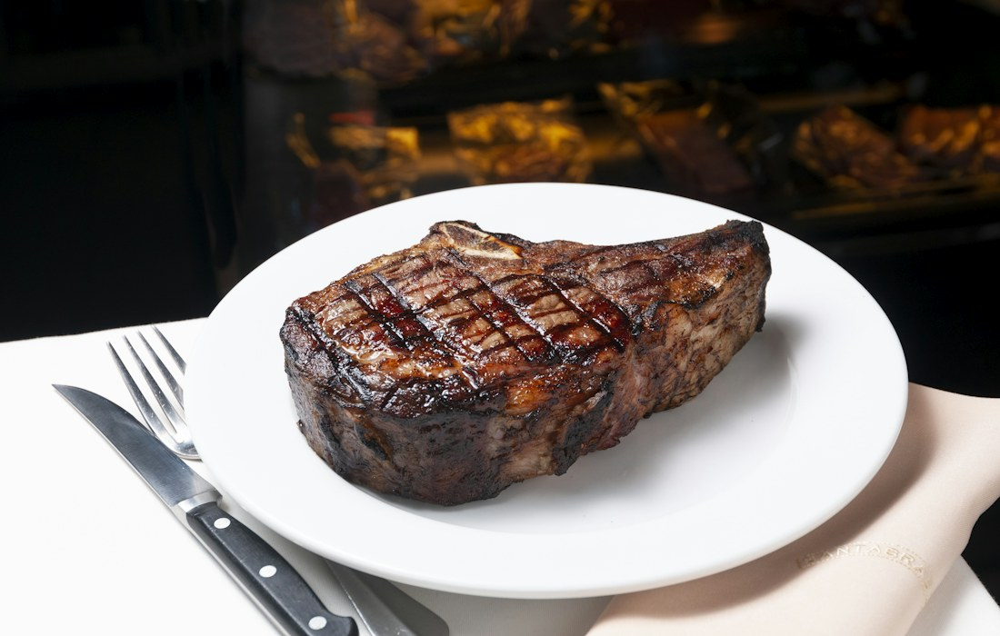

BIENVENIDO A NUESTRA MESAEL ARTE DE
EL ARTE DE
COMER BIEN.
Sabores para descubrir.
Momentos para compartir.
BRASA · COCINA · COCTELERÍAFOTOGRAFÍA DE REFERENCIA
SANTORINI
GASTROBAR
GASTROBAR
Del primer antojo
al último brindis.
SIGAMOS LA CONVERSACIÓNLOS BUENOS
Síguenos en redes@santorini.restaurantemLOS BUENOS
MOMENTOS SE COMPARTEN.
Encuéntranos en Instagram y sigue a Santorini.